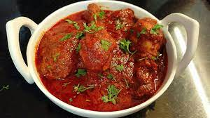

Delicious Malvani Chicken!!

Description
Malvani sukka chicken tastes just awesome. This chicken doesn’t need many efforts and is not much time consuming too. This is a ready quick and easy recipe. It doesn’t need many ingredients too. The chicken doesn’t turn too dry. It turns out nice and juicy. You can try this recipe at home.
This recipe doesn’t need too many ingredients. You can make it using very few ingredients those are easily available in your pantry. We are using Malvani masala that make it even testier. The chicken though sukka, doesn’t turn out dry but remains nice and juicy. You will be getting few tips for that. This is a very easy and simple recipe. Why don’t you try this at your home? Hereis the recipe for you.
Here are the Ingredients!!
- 500 gm Chicken
- 1 tsp Ginger-Garlic paste
- 1/4 tsp Turmeric powder
- Finely chopped Coriander leaves
- 1 tsp Malvani masala
- 1/4 cup shredded Fresh Coconut
- 7~8 Garlic cloves
- 1/2” chopped Ginger
- Green chili
- Coriander leaves
- 4 tsp Oil
- 3 finely chopped Onions
- 1 finely chopped Tomato
- 1 tsp Malvani masala
- Red chili powder
- 1~2 tsp Water
- Salt to taste
Steps
- Wash chicken really good and add ginger-garlic paste, turmeric powder, salt, coriander leaves, malvani masala.
Mix well and marinate it for about 30 minutes.
- For making fresh masala or vatan take fresh coconut, garlic, ginger, green chili, coriander leaves in a blender jar and blend everything into fine paste.
Vatan or fresh masala is ready.
- Heat up oil in a pan and add onion.
Fry well until onion gets nice golden color.
- Add tomato and fry until tomato is cooked well.
Add malvani masala, red chili powder and mix well.
- Add the fresh blended masala and mix well.
Add marinated chicken and mix well.
- Add water, cover and cook on medium heat for about 15-20 minutes.
Keep on stirring at the regular intervals.
- Add salt and mix well.
Malvani sukka chicken is all ready.